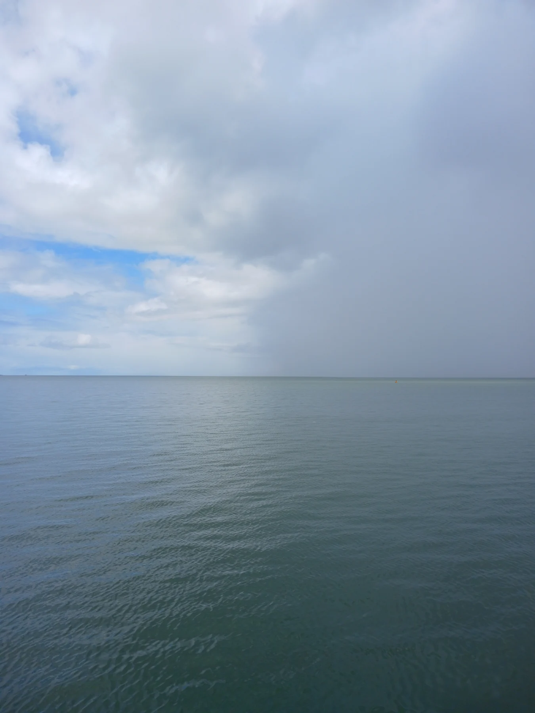

Savininko kajutė
26 m² · Dvigulė lova · Atskiras dušas

34 metrai / Visa erdvė jums
Rytas be adreso. Savaitė be skubos.
Atrasti gyvenimą denyje01 / Gyvenimas denyje
Pasirinkite numerį plane. Atversime erdvę, jos matmenis ir paskirtį.
Scheminis demonstracinis planas, ne statybos brėžinys.
Rami vieta pirmajai kavai ir horizontui. Atvira dienai, apsaugota nuo skubos.
8 svečiai · Atvira erdvė
Planuoti savo savaitę ↗02 / Lėtas gyvenimas
Demonstraciniame projekte — viena savininko, viena dvivietė ir dvi atskiros dviejų lovų kajutės. Iš viso aštuoni svečiai.
26 m² · Dvigulė lova · Atskiras dušas
18 m² · Dvigulė lova · Atskiras dušas
Po 14 m² · Atskiros lovos · Bendras holas
03 / Laivo duomenys
Visi skaičiai yra išgalvoto laivo projekto demonstracija.
| Ilgis | 34,0 m |
|---|---|
| Plotis | 7,4 m |
| Grimzlė | 2,1 m |
| Kreiserinis greitis | 11 mazgų |
| Svečių / kajučių | 8 / 4 |
| Įgulos narių | 5 |
04 / Jūsų ramybei
Kapitonas ir denio komanda rūpinasi kelione. Šefas ir du svetingumo komandos nariai — jūsų dienos ritmu. Tai išgalvoto projekto komanda, be tikrų žmonių profilių.
Pradėti savo savaitę